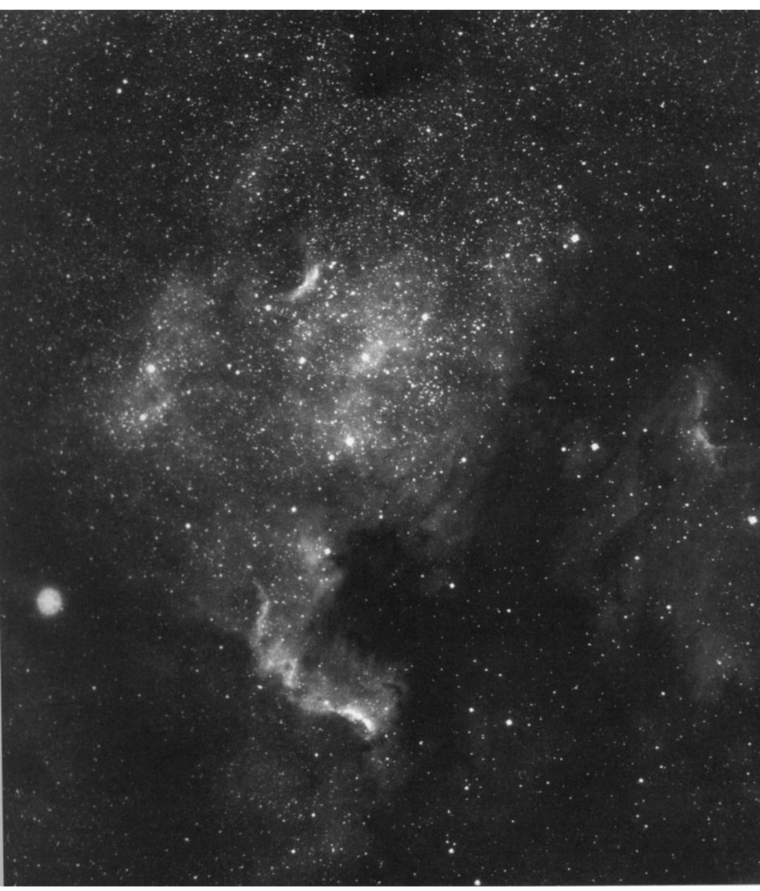
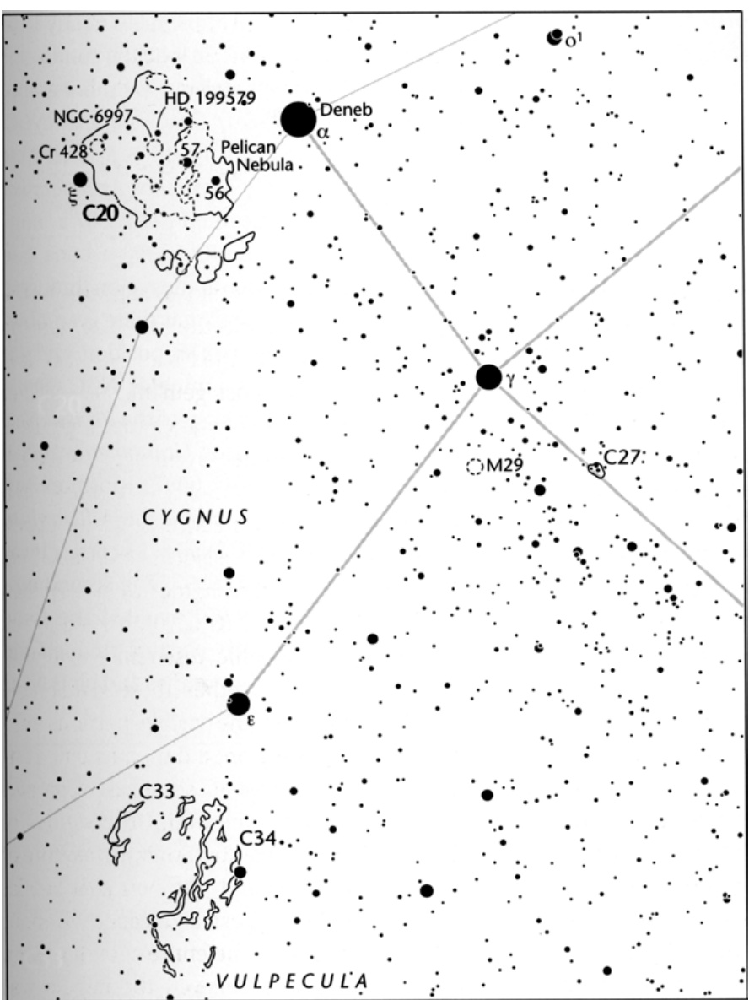

北美星云 · North America Nebula (NGC 7000)
当首次通过望远镜观测时，夜空中很少有深空天体能够名副其实地展现其发现者或后世观测者赋予的诗意名称。若要凭借心灵之眼辨识其形态，许多星云——诸如礁湖星云（M8）、蟹状星云（M1）和猫头鹰星云（M97）——要么需要震撼的摄影作品，要么需要观测者在目镜前充分调动想象力。
When seen for the first time through a telescope, few deep-sky objects in the heavens live up to the poetic names pinned on them by their discoverers or by later observers. For their shapes to be seen with the mind's eye, many nebulae — like the Lagoon (M8), the Crab (M1), and the Owl (M97) — require either an impressive photograph or a lot of imagination at the eyepiece.
但天鹅座内的北美洲星云却是个例外。这团朦胧的光晕即使用双筒镜或广角望远镜随意一瞥，也足以名副其实地展现其命名由来。
But not the North America Nebula in Cygnus. Here is one fuzzy glow that lives up to its name even upon a casual glance through binoculars or a rich-field telescope.

| 参数 Parameters | 值 Value | 说明 Description |
|---|---|---|
| 赤经 Right Ascension | 20h 58.8m | 标记北美星云在天球上的经度位置 |
| 赤纬 Declination | +44° 20′ | 位于北半球高纬度区域，适宜观测 |
| 视星等 Magnitude | 5.0 (O'Meara: 3.8) | 理论上肉眼可见，实际需光学辅助 |
| 视直径 Apparent Size | 100′ × 60′ | 超过1度天区，跨度近满月两倍 |
| 距离 Distance | ~1,800 光年 | 与鹈鹕星云共同构成巨型电离氢区 |
| 类型 Type | 发射星云 Emission Nebula | 被高温年轻恒星电离而发光 |
| 发现者 Discoverer | William Herschel, 1786 | 赫歇尔于1786年10月24日首次记录 |
| 所在星座 Constellation | 天鹅座 Cygnus | 位于北十字顶端天津四附近 |
历史发现 · Historical Discovery
威廉·赫歇尔于1786年10月24日首次记录了这片星云，他在观测笔记中写道：
William Herschel first recorded this nebula on October 24, 1786, noting in his observations:
"非常庞大而弥散的星云状物质，中央区域较为明亮。长度约7至8角分。ε方向宽阔，逐渐且难以察觉地消散于背景中。"
"Very large diffused nebulosity, brighter in the middle. 7' or 8' long. ε broad and losing itself very gradually and imperceptibly."
然而，这个天体真正获得"北美星云"这个脍炙人口的名字，要归功于德国天文学家马克斯·沃夫（Max Wolf）。1890年，当他首次拍摄到NGC 7000的影像时，那酷似北美洲大陆的轮廓令他惊叹不已。
However, the nebula earned its popular name "North America Nebula" from German astronomer Max Wolf. When he first photographed NGC 7000 in 1890, its uncanny resemblance to the continent left him awestruck.
翻阅本书的照片，您就会明白这个命名的缘由。这片星云不仅拥有轮廓分明的东部海岸线，突出的佛罗里达半岛，被得克萨斯和中美洲环绕的暗色墨西哥湾，还有从墨西哥延伸至加拿大的西海岸。
"Look at the photograph on page 83 and you will see why. Among other 'geographical' features, the nebula has a sharply defined eastern seaboard, a projecting Florida Peninsula, a dark Gulf of Mexico rimmed by Texas and Central America, and a West Coast running from Mexico to Canada."
天鹅座的宇宙地图 · A Celestial Map in Cygnus
切特·雷默在《365个星夜》中写下了一段令人深思的文字：
Chet Raymo wrote something thought-provoking in his book "365 Starry Nights":
"凝视北美星云的照片时，我总会想起那些骑着马、划着桦树皮独木舟测绘北美洲的探险家们。如今我们这颗小小星球已被彻底探索，每一片黑暗大陆都留下了人类的足迹。现在我们将好奇心转向太空中新的'黑暗大陆'，而望远镜将成为我们的'桦树皮'独木舟。"
"As I look at a photograph of the North America Nebula, I am reminded of the explorers who, on horseback and in birchbark canoe, mapped North America. Our own small planet has now been thoroughly explored. We have reached the heart of every dark continent. We now turn our curiosity to new 'dark continents' in space and the telescope will be our 'birchbark' canoe."
你的观测冒险可以从一等星天鹅座α（天津四，Deneb）开始——它是夜空中最明亮的蓝超巨星之一。天津四标记着天鹅座的尾部，也是北十字的顶点，同时构成夏季大三角最北端的明珠。
Your own adventure can start with the 1st-magnitude star Alpha (α) Cygni (Deneb), one of the most luminous blue supergiants in the night sky. Deneb marks the tail of Cygnus, the Swan, and the top of the Northern Cross. It is also the northernmost gem in the Summer Triangle, whose trio of stars hangs high overhead on late-summer evenings.
北美星云（NGC 7000）仅位于天津四以东3度、天鹅座ξ星（4等星）以西1度处。
The North America Nebula resides only 3° east of Deneb and 1° west of 4th-magnitude Xi (ξ) Cygni.
紧邻北美星云西侧是著名的鹈鹕星云（IC 5067与IC 5070），其摄影影像与这种食鱼鸟类的神似形态令人称奇，不过实际观测难度较高。这两片非凡的星云共同构成了一个巨型电离氢区（H II区），一道西北-东南走向的暗尘带将"大陆"与"飞鸟"分隔开来。
Immediately west of the North America Nebula is the famous (though harder-to-see) Pelican Nebula (IC 5067 and IC 5070), named for its uncanny photographic resemblance to that fish-eating bird. Together these remarkable nebulae constitute the visible portions of a single large H II region; a dark dust lane running from northwest to southeast separates the landmass from the bird.

能量之谜 · The Energy Enigma
关于星云的能量来源，天文学家曾经历漫长的探索历程。最初，人们认为天津四是主要电离源，但研究焦点很快转移到位于H II区北象限的6等星HD 199579（光谱类型O6）上。
Regarding the energy source of the nebula, astronomers have gone through a long journey of exploration. Initially, Deneb was thought to be the primary ionization source, but the focus soon shifted to the hot (spectral type O6) 6th-magnitude star HD 199579 in the northern quadrant of the H II region.
维尔坦茨·斯特拉日斯（立陶宛理论物理与天文研究所）及其团队对尘埃带的观测表明，整个复合体距离地球约1,800光年。若以此距离计算，北美星云的跨度数近50光年。
*Observations of this dust lane by Vytantas Straizys (Institute of Theoretical Physics and Astronomy, Lithuania) and colleagues suggest a distance of about 1,800 light-years for the entire complex. At that distance, the North America Nebula spans nearly
🔒 受限于篇幅，本文仅展示部分样章。O'Meara 先生完整的观测手记、实测数据及未公开的独家配图，请参阅原著双语典藏版。
👉 立即在闲鱼获取《DEEP-SKY COMPANIONS》中英双语高清典藏版